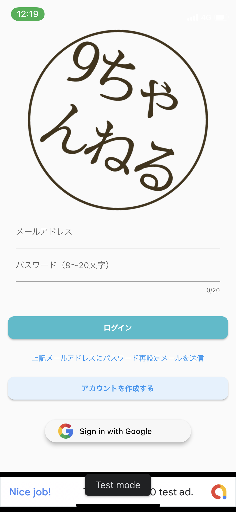
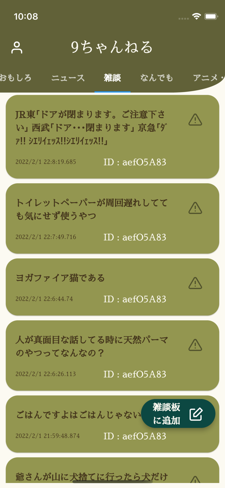
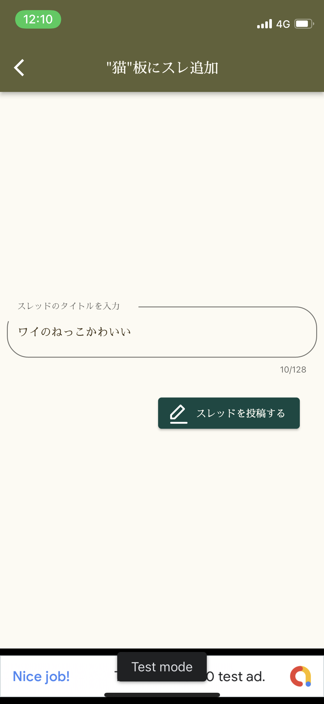

メールアドレス,Googleアカウント,でのログインが可能です。
iosデバイスの場合はAppleアカウントでのログインも可能となります。
右下の〇〇板に追加ボタンよりスレッド投稿画面に移動できます。
投稿画面ではスレッドのタイトルのみ入力可能となっております。
IDをタップすることでユーザーをブロックすることができます。またすでにブロックさせていた場合は解除することができます
投稿の右に配置されているボタンより違反通報が可能です。また自分の投稿の場合は削除ができます。
 投稿されたスレッドをタップすることでそのスレッドのトークに参加できます。
投稿の右に配置されているボタンより違反通報が可能です。また自分の投稿の場合は削除ができます。
IDをタップすることでユーザーをブロックすることができます。またすでにブロックさせていた場合は解除することができます
右下の鉛筆ボタンよりレスポンスの投稿画面に移動できます。
右上のハートボタンを一度押すことでお気に入り登録ができます。再度押すことで解除可能です。
レスポンス投稿画面では名前、コメント、URL、画像を投稿することが可能です。
投稿に関する注意事項
ホーム画面の右上の人マークを押すことでその他の機能が使用できます。
お問合せ先